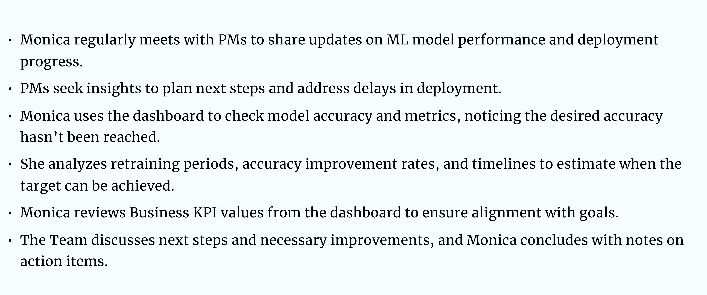
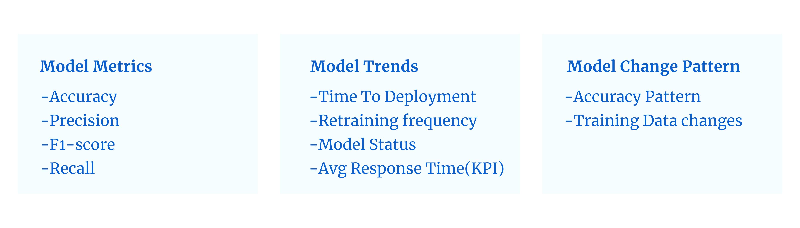
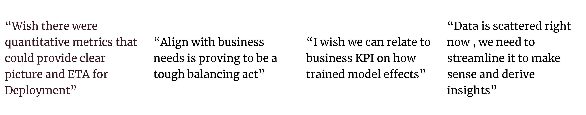

A team of ML professionals is responsible for building and maintaining ML models. Lately, they have been communicating updates with the management team but have struggled to provide a timeframe for model deployment as it is in the retraining phase to achieve the desired accuracy before deployment.

After finalizing the design requirements to effectively understand how the dashboard can serve as a communication tool, I began developing a context scenario. This scenario describes how Monica will interact with the dashboard when discussing it with the business team.
This is how Monica would interact with the dashboard for communication with the business team:
After going through the scenario, the following data can be derived that is required by Monica to communicate the updates:

1. The dashboard centralizes all required data in one place, providing ML professionals with easy access to everything they need.
2. The dashboard facilitates clearer and faster communication between teams, effectively bridging communication gaps.
It was a data-focused UI design project aimed at creating a user-friendly interface that made it easy to view, access, and understand complex data, helping users make decisions quickly and efficiently.
Comments From ML Professionals
